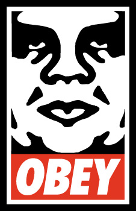
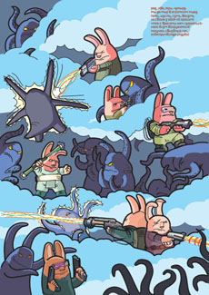
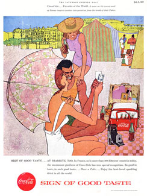

СВОБОДА СОВЕСТИ В ИЛЛЮСТРАЦИИ
Мнение иллюстратора может не совпадать с мнением автора
Трудно нынче иллюстратору с убеждениями – но это всегда трудно. Хуже то, что и без убеждений трудно. Нет-нет да и вляпаешься в политику. Легко не работать в крупных газетах, тем более, что ежедневный ритм мало кто умеет выдержать, но даже за политически нейтральными журналами (бизнес, гламур, развлечения, дети...) непременно стоит концерн какого-нибудь олигарха - или же иностранный капитал, у которого забота, как известно, одна: промывать нам с вами мозги.

Вот вы, например. Приступая к работе в том или ином издании, даете ли себе труд выяснить, кому принадлежит издательский дом? Кто для вас важнее, люди на самом заоблачном верху или те, с кем непосредственно работаешь? И далее, может ли, по-вашему, мнение иллюстратора не совпадать с мнением редакции? Вправе ли взявшийся за гуж иллюстратор выражать самостоятельное отношение к героям заданного текста? Понятно, что арт-дир не даст, но если исподволь?
Это хорошо еще тем, кто может себе позволить отказаться от заказа, а начинающему иллюстратору вдобавок приходится участвовать во всех некоммерческих проектах подряд, лишь бы заметили.
Многих ли, например, отпугнула от конкурса плакатов ко дню энергетика зловещая тень Чубайса?
Обратите внимание, вот эти облачка – верный признак того, что автор понятия не имеет, где это все происходит (еще есть приметы того, что картинка делалась по другому случаю, но это мы, за истечением срока давности, оставим)

Взять, кстати, рекламу (тут есть, правда, защитный механизм, благодаря которому к вам, например, никогда не придет за обложкой категорически чуждый музыкант: выбирая (формируя) свой стиль, вы заранее отпугиваете его. Но:) Стали бы вы, к примеру, работать на Микрософт? Зная, к примеру (а так оно и бывает), что наутро непременно обнаружите под подушкой стопку новеньких трехнулевых заказов? Или для Гугла, который, как нам недавно объяснили, еще хуже? (у них, кстати, довольно тухлые картинки по праздникам, так и подмывает предложить услуги).
Что хуже: поступиться принципами или потерять заказ (то есть нанести ущерб собственной деловой репутации)?
Что могло бы сподвигнуть вас отказаться от работы на Кока-Колу, например?
То, что она практически монополист? Использует запрещенные приемы в борьбе с Пепси? То, что в нее больше не кладут коку? То, что из-за этого в свое время разорился миллион боливийских фермеров? Или пузырьки жгут язык? Или, наконец, то, что вы предпочитаете Пепси? Ответов у меня сегодня нет, одни вопросы.

(Еще здесь) Лирическое отступление. Любое прошлое, как известно, лучше любого настоящего. Автор мне, к сожалению, неизвестен, но посмотрите, как зонтик, сливаясь с фоном, выгрызает у девушки кусок спины, но при этом подчеркивает ее движение и делает вроде бы "реалистичную" картинку остро гротескной. Вот так надо обманывать клиента. Тем, что слабо соображают в иллюстрации, вечно хочется чего-то сладенького - им запросто можно под сахарной глазурью подсунуть все, что угодно.
Возможно, не всем еще удалось столкнуться с подобным выбором, но помяните мое слово – придется. И лучше бы заранее выработать стратегию, чтобы если уж "нет", то "НЕТ!", и немедленно, чтобы не мямлить и не клянчить отсрочку. И на сайте завести специальную страничку «принципы», чтобы не ставить людей в неловкое положение.